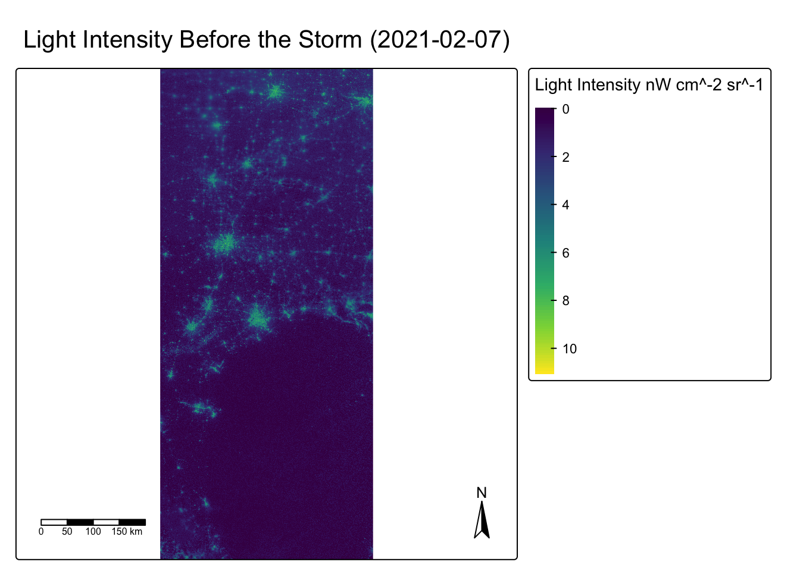
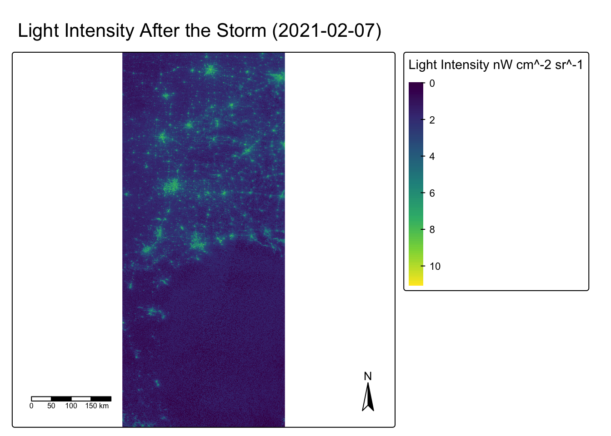
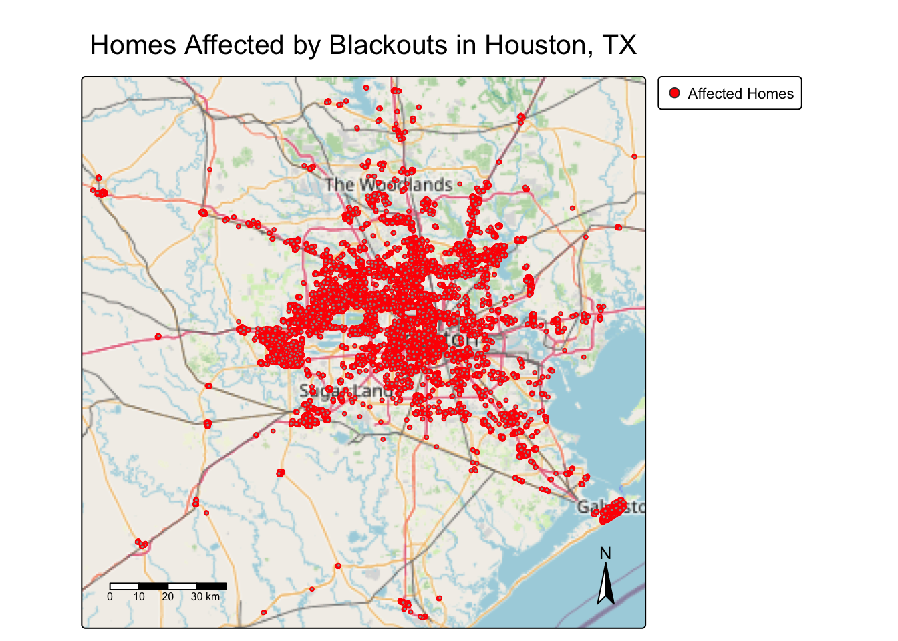
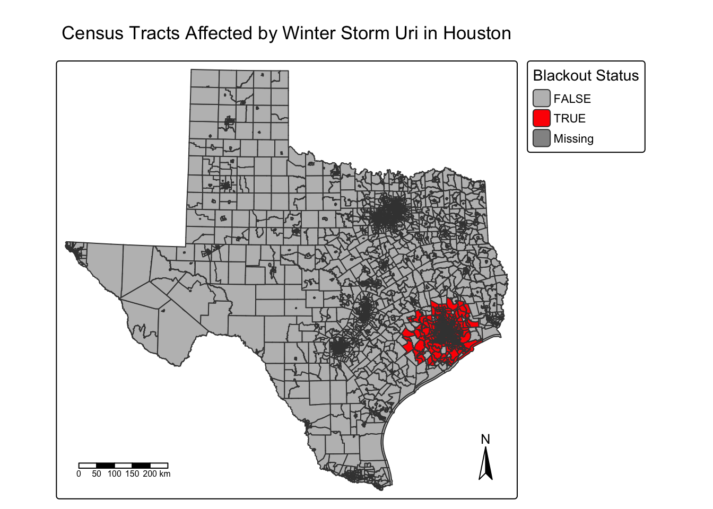
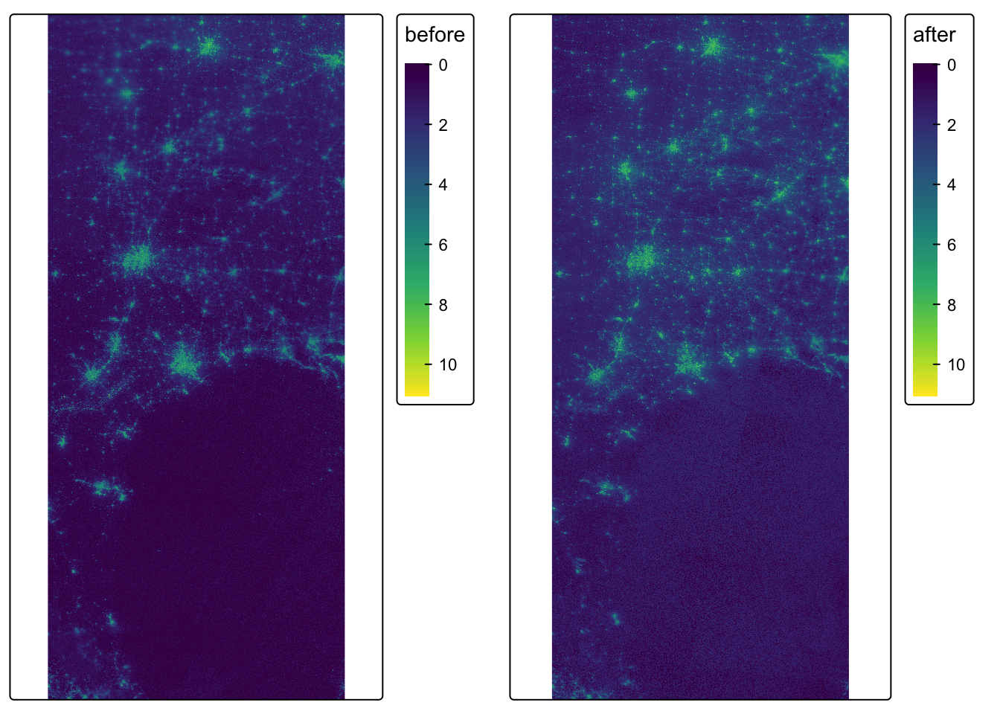

# Loading in Libraries
library(tmap)
library(here)
library(dplyr)
library(sf)
library(ggplot2)
library(terra)
library(stars)
library(knitr)
library(kableExtra)Houston analysis
Purpose
The purpose of this project was to analyze the extent of the power outage that took place in Houston, Texas due to the winter storms in February 2021. Socioeconomic data from the U.S. Census Bureau was used estimate the number of houses that had a power outage and evaluate whether communities that had socioeconomically differences were effected differently.
Reading in Data
# Read in the four raster tiles for Night lights data
vnp_05 <- read_stars(here("data", "VNP46A1", "VNP46A1.A2021038.h08v05.001.2021039064328.tif"))
vnp_06 <- read_stars(here("data", "VNP46A1", "VNP46A1.A2021038.h08v06.001.2021039064329.tif"))
vnp_05_2 <- read_stars(here("data", "VNP46A1", "VNP46A1.A2021047.h08v05.001.2021048091106.tif"))
vnp_06_2 <- read_stars(here("data", "VNP46A1", "VNP46A1.A2021047.h08v06.001.2021048091105.tif"))# Read in data for excluding highways from the cropped blackout mask
roads <- st_read(here("data", "gis_osm_roads_free_1.gpkg"), query = "SELECT * FROM gis_osm_roads_free_1 WHERE fclass='motorway'", quiet = TRUE)# Read in data for identifying the number of homes likely impacted by blackouts
buildings <- st_read(here("data", "gis_osm_buildings_a_free_1.gpkg"),
query = "SELECT *
FROM gis_osm_buildings_a_free_1
WHERE (type IS NULL AND name IS NULL)
OR type IN ('residential','apartments','house','static_caravan','detached')", quiet = TRUE)# read in Socioeconomic data
acs_geom <- st_read("data/ACS_2019_5YR_TRACT_48_TEXAS.gdb",
layer = "ACS_2019_5YR_TRACT_48_TEXAS", quiet = TRUE)|>
dplyr::select(-c(GEOID)) |>
rename(GEOID = GEOID_Data) |>
st_transform(crs = 3083)
acs_income <- st_read("data/ACS_2019_5YR_TRACT_48_TEXAS.gdb",
layer = "X19_INCOME", quiet = TRUE) |> dplyr::select(c(GEOID, B19013e1, B19013m1))Data Cleaning
Create blackout mask
To identify places that experienced a blackout, a “mask” was created that indicates for each cell whether or not it experienced a blackout.
To do so, the change in night lights intensity (presumably) caused by the storm was found by creating a raster object for each day (2021-02-07 and 2021-02-16). The difference raster was then reclassified such that any location that experienced a drop of more than 200 nW cm-2sr-1 experienced a blackout. NAs were assigned to all locations that experienced a drop of less than 200 nW cm-2sr-1 change. The mask then vectored using st_as_sf() and any invalid geometries were fixed with st_make_valid(). The mask was then cropped to the Houston area using following coordinates: (-96.5, 29), (-96.5, 30.5), (-94.5, 30.5), (-94.5, 29). The cropped mask data set then needed to be re-projected to EPSG:3083 (NAD83 / Texas Centric Albers Equal Area).
# Merge 2021-02-07 data (before the storm)
before <- st_mosaic(vnp_05, vnp_06)
# # Merge 2021-02-16 data (after the storm)
after <- st_mosaic(vnp_05_2, vnp_06_2)
# Find the change in night light
change_in_light <- before - after
# Identify blackout areas
blackout_mask <- change_in_light > 200
# Assign NAs to all locations that experienced a drop of less than 200
blackout_mask[blackout_mask <= FALSE] <- NA
blackout_mask[blackout_mask > TRUE] <- 1
# Convert raster mask to vector polygons
blackout_vec <- st_as_sf(blackout_mask, as_points = FALSE, merge = TRUE, na.rm = TRUE)
# Make polygons valid
blackout_vec <- st_make_valid(blackout_vec)# Crop to the Houston area
houston_box <- st_bbox(c(xmin = -96.5, ymin = 29, xmax = -94.5, ymax = 30.5), crs = st_crs(blackout_vec))
# Convert to simple feature polygon
houston_box <- st_as_sfc(houston_box)
# Crop to the Houston bounding box
houston_blackout <- st_crop(blackout_vec, houston_box)
# Transform houston_blackout CRS to EPSG:3083
houston_blackout_3083 <- st_transform(houston_blackout, crs = 3083)
# Check if CRSs is EPSG:3083
if (st_crs(houston_blackout_3083)$epsg == 3083) {
message("🟢 CRS is EPSG:3083")
} else {
warning("❗ CRS is NOT EPSG:3083")
}🟢 CRS is EPSG:3083Exclude highways from the cropped blackout mask
Identify the number of homes likely impacted by blackouts
To identify homes that overlap with areas that experienced blackouts the CRS of buildings was changed to EPSG:3083 (NAD83 / Texas Centric Albers Equal Area) and a spacial intersection was done on buildings_3083 and blackout_no_highway.
# Transform buildings CRS to EPSG:3083
buildings_3083 <- st_transform(buildings, crs = 3083)
# Preform intersection on `buildings_3083` and `blackout_no_highway`
affected_buildings <- st_join(buildings_3083, blackout_no_highway, join = st_intersects, left = FALSE)Socioeconomic
Since getting socioeconomic information for every home isn’t doable, data from the U.S. Census Bureau’s American Community Survey for census tracts in 2019 was instead obtained. The folder ACS_2019_5YR_TRACT_48.gdb is an ArcGIS “file geodatabase”, a multi-file proprietary format that’s roughly analogous to a GeoPackage file.
To get a feature layer that sf can use, the geometry layer (ACS_2019_5YR_TRACT_48_TEXAS) and the income layer (X19_INCOME) were combined using a left join on the GEOID column. The CRS was then transformed to EPSG:3083 (NAD83 / Texas Centric Albers Equal Area) to match the CRS of the blackout and building data.
# Check layer names
st_layers("data/ACS_2019_5YR_TRACT_48_TEXAS.gdb")Driver: OpenFileGDB
Available layers:
layer_name geometry_type features fields crs_name
1 X01_AGE_AND_SEX NA 5265 719 <NA>
2 X02_RACE NA 5265 433 <NA>
3 X03_HISPANIC_OR_LATINO_ORIGIN NA 5265 111 <NA>
4 X04_ANCESTRY NA 5265 665 <NA>
5 X05_FOREIGN_BORN_CITIZENSHIP NA 5265 1765 <NA>
6 X06_PLACE_OF_BIRTH NA 5265 1221 <NA>
7 X07_MIGRATION NA 5265 1793 <NA>
8 X08_COMMUTING NA 5265 2541 <NA>
9 X09_CHILDREN_HOUSEHOLD_RELATIONSHIP NA 5265 263 <NA>
10 X10_GRANDPARENTS_GRANDCHILDREN NA 5265 373 <NA>
11 X11_HOUSEHOLD_FAMILY_SUBFAMILIES NA 5265 781 <NA>
12 X12_MARITAL_STATUS_AND_HISTORY NA 5265 759 <NA>
13 X13_FERTILITY NA 5265 399 <NA>
14 X14_SCHOOL_ENROLLMENT NA 5265 779 <NA>
15 X15_EDUCATIONAL_ATTAINMENT NA 5265 715 <NA>
16 X16_LANGUAGE_SPOKEN_AT_HOME NA 5265 871 <NA>
17 X17_POVERTY NA 5265 3941 <NA>
18 X18_DISABILITY NA 5265 893 <NA>
19 X19_INCOME NA 5265 3045 <NA>
20 X20_EARNINGS NA 5265 2185 <NA>
21 X21_VETERAN_STATUS NA 5265 565 <NA>
22 X22_FOOD_STAMPS NA 5265 243 <NA>
23 X23_EMPLOYMENT_STATUS NA 5265 1625 <NA>
24 X25_HOUSING_CHARACTERISTICS NA 5265 4415 <NA>
25 X27_HEALTH_INSURANCE NA 5265 1593 <NA>
26 X28_COMPUTER_AND_INTERNET_USE NA 5265 385 <NA>
27 X29_VOTING_AGE_POPULATION NA 5265 35 <NA>
28 X99_IMPUTATION NA 5265 783 <NA>
29 X24_INDUSTRY_OCCUPATION NA 5265 2107 <NA>
30 X26_GROUP_QUARTERS NA 5265 3 <NA>
31 TRACT_METADATA_2019 NA 35976 2 <NA>
32 ACS_2019_5YR_TRACT_48_TEXAS Multi Polygon 5265 15 NAD83# Preform a left join on the GEOID column
acs_full <- left_join(acs_geom, acs_income, by = "GEOID")
# Transform acs_full CRS to EPSG:3083
acs_full_3083 <- st_transform(acs_full, 3083)Data Cleaning
A set of maps comparing night light intensities before and after the first two storms
# Apply log(1 + x) to make before visible
before_log <- log1p(before)
# Plot a map comparing night light intensities before two storms
tm1 <- tm_shape(before_log) +
tm_raster(
style = "cont",
palette = "viridis",
title = "Light Intensity nW cm^-2 sr^-1" ) +
tm_layout(
main.title = "Light Intensity Before the Storm (2021-02-07)",
legend.outside = TRUE
) +
tm_scale_bar(position = c("left", "bottom")) +
tm_compass()
# Show the map
tmap_arrange(tm1)
# Apply log(1 + x) to make after visible
after_log <- log1p(after)
# Plot a map comparing night light intensities after two storms
tm2 <- tm_shape(after_log) +
tm_raster(
style = "cont",
palette = "viridis",
title = "Light Intensity nW cm^-2 sr^-1") +
tm_layout(
main.title = "Light Intensity After the Storm (2021-02-07)",
legend.outside = TRUE ) +
tm_scale_bar(position = c("left", "bottom")) +
tm_compass()
# Show the map
tmap_arrange(tm2)
A map of the homes in Houston that lost power
# Plot a map of the homes in Houston that lost power
tm_homes <- tm_shape(affected_buildings) +
tm_basemap("OpenStreetMap") +
tm_bubbles(
size = 0.2,
col = "red"
) +
tm_add_legend(
type = "symbol",
labels = "Affected Homes",
col = "red",
size = 0.5
) +
tm_layout(
main.title = "Homes Affected by Blackouts in Houston, TX",
legend.outside = TRUE
) +
tm_scale_bar(position = c("left", "bottom")) +
tm_compass()
# Show the map
tm_homes
# Count rows to find the number of homes that experienced a blackout
num_affected_homes <- nrow(affected_buildings)
# Create a data frame with the count of homes that experienced a blackout
affected_summary <- data.frame( City = "Houston", Homes_Affected = num_affected_homes)
# Display number of homes that experienced a blackout with a kable
kable(affected_summary,
caption = "Estimate of the Number of Homes in Houston that Lost Power") |>
kable_styling(full_width = FALSE, bootstrap_options = "bordered")| City | Homes_Affected |
|---|---|
| Houston | 157417 |
A map of the census tracts in Houston that lost power
# perform an intersection on acs_full_3083 and blackout_no_highway
houston_acs_blackout <- st_join(acs_full_3083, blackout_no_highway, join = st_intersects, left = FALSE)
# Create a boolean column to show which had/didn't have a power outage
acs_full_3083 <- acs_full_3083 %>%
mutate(blackout = GEOID %in% houston_acs_blackout$GEOID)
# Make a map of a map of the census tracts in Houston that lost power
tm_blackout_tracts <- tm_shape(acs_full_3083) +
tm_polygons(
col = "blackout",
palette = c("grey", "red"),
title = "Blackout Status"
) +
tm_layout(
main.title = "Census Tracts Affected by Winter Storm Uri in Houston",
legend.outside = TRUE
) +
tm_scale_bar(position = c("left", "bottom")) +
tm_compass()
# Show the map
tm_blackout_tracts
# Make blackout_mask into polygons
blackout_vec <- st_as_sf(blackout_mask, as_points = FALSE, merge = FALSE, na.rm = TRUE)
# Change blackout_vec's CRS to 3083
blackout_vec_3083 <- st_transform(blackout_vec, 3083)
# Check which census tracts intersect a blackout polygon
tracts_with_blackout <- st_intersects(acs_full_3083, blackout_vec_3083)
acs_full_3083$blackout <- lengths(tracts_with_blackout) > 0
# Make a box plot comparing the distributions of median household income for census tracts that did and did not experience blackouts
ggplot(acs_full_3083, aes(x = blackout, y = B19013e1, fill = blackout)) +
geom_boxplot() +
scale_fill_manual(
values = c("TRUE" = "gray", "FALSE" = "yellow"),
labels = c("TRUE" = "Blackout", "FALSE" = "No Blackout"), # Change value names in legend
name = "Blackout Status"
) +
scale_x_discrete(labels = c("No Blackout", "Blackout")) + # Change value names below box plots
labs(
title = "Median Household Income by Blackout Status",
x = "Blackout Status",
y = "Median Household Income (USD$)"
) +
theme_minimal()
A brief reflection (approx. 100 words) summarizing your results and discussing any limitations to this study
After this analysis was conducted it was found that the estimated number of homes in Houston, Texas that experienced a power outage due to the Winter storm Uri in Febuary 2021 was 157,417. A big limitation of this study was the data. Since the blackout mask was only based on two days of night light data, its probable that not all outages were captured. Another limitation was how the study was conducted. St_intersection was used, which assumes houses partially in the blackout zone experienced a power outage. This might have caused an over estimation of the extent of the blackout.
References
Román, M. O., Wang, Z., Sun, Q., Kalb, V. L., Miller, S. D., Molthan, A., Schultz, L., Bell, J., Stokes, E. C., Pandey, B., et al. (2018). NASA’s Black Marble nighttime lights product suite (VNP46). Remote Sensing of Environment, 210, 113–143. https://doi.org/10.1016/j.rse.2018.03.017 Retrieved November 10
OpenStreetMap Contributors. (2025). OpenStreetMap database [Data set]. Geofabrik GmbH. Retrieved November 10, 2025
U.S. Census Bureau. (2020). TIGER/Line shapefiles and American Community Survey 2019 (5-year estimates), Texas — Census tract level (ACS_2019_5YR_TRACT_48_TEXAS) [Data set]. U.S. Department of Commerce. Retrieved November 10, 2025
Lee, C. C., Maron, M., & Mostafavi, A. (2022). Community-scale big data reveals disparate impacts of the Texas winter storm of 2021 and its managed power outage. Humanities and Social Sciences Communications, 9(1), 335. https://doi.org/10.1057/s41599-022-01353-8 Retrieved November 10, 2025